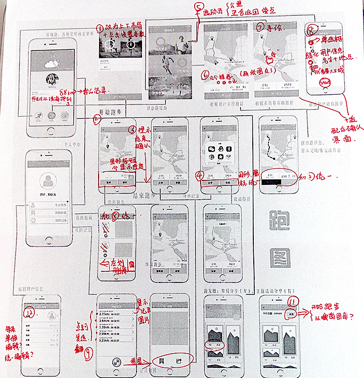

Description:
Pao Tu is the Mobile Interaction Design course project. The idea came from a popular picture of running routes which show “will you marry me”. We noticed that nowadays people of different age levels are willing to try something new and interesting and follow trends on social networks. We tried to make the ordinary running process much more attractive and inspiring. Encouraging runners to enjoy the pleasure in the meanwhile excise themselves. We analyzed problems, sketched, studied users, analyzed tasks, made Axure prototype, evaluated and improved the prototype.
Target Users:
Running enthusiasts
Runners can record and analyze routes, distance, speed and other specific datas and better control their performance.
Potential Runners
They are willing to run but lack the motivation to insist.
Trend followers
They are the trend creators and followers, enjoy share interesting things on social networks.
Mental Model Diagram:

System Structure Diagram:
Wireframe Sketch:

Story Board:

Low-fidelity Prototype:

Evaluation & Improvement:
After we created the low-fidelity prototype, we used the walkthrough method to evaluate the process and interaction of the prototype. And we made improvements on the design of interfaces, the content and details of functions and the switch of interfaces.

Final
Download Demo Vedio 下载中文报告